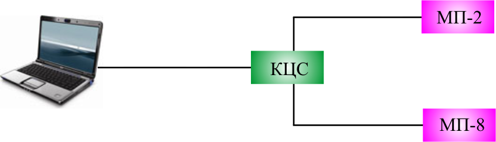

Тема №7. Устройство цифровых систем телекоммуникаций
Занятие №9. Эксплуатация цифровых систем передачи «Megatrans-3M».
Учебные вопросы:
Литература:
- Многоканальные системы передачи (часть 2). Учебно-методическое пособие «Аппаратура МКСП с ЧРК». – Мн.: БГУИР, 2010.
- Учебно-наглядное пособие «Альбом схем аппаратуры МКСП». – Мн.: БГУИР, 2010.
- Касанин С.Н., Дюжов Г.Ю. Субботин С.Г. Методическое руководство «Цифровая система передачи MEGATRANS-3M». – Мн., БГУИР, 2010.
Компьютерные программы, наглядные пособия и технические средства обучения:
1. Проверка программного обеспечения СуперТел- NMS.
Программное обеспечение поставляется с установленными данными пользователя.
По умолчанию Имя и Пароль для входа в систему управления установлены такие:
Имя : SUPERTEL
Пароль : 1234
Уровень допуска по умолчанию установлен - Администратор системы.
ВНИМАНИЕ ! После начального входа в систему администратор системы обязательно должен изменить Имя и Пароль с помощью функции Персонал.
Для этого рекомендуется следующий алгоритм действий:
- В строке меню окна СХЕМА СЕТИ щёлкните мышью по команде Персонал. В открывшемся подменю выберите команду Список персонала и щёлкните по ней мышью. Откроется диалоговое окно СПИСОК ПЕРСОНАЛА (рисунок 5.1).
- Нажмите кнопку Добавить запись. Откроется окно РЕДАКТОР ПЕРСОНАЛА (смотри рисунок 5.2). В текстовых окнах необходимо ввести новые данные пользователя - администратора системы.
-
В текстовых окнах введите:
- ФИО: фамилию, имя, отчество пользователя - администратора системы;
- ИМЯ: имя пользователя - администратора системы, которое будет вводиться в окне регистрации;
- Пароль: пароль пользователя - администратора системы.
- В кнопочном переключателе УРОВЕНЬ ДОПУСКА установите уровень допуска оператора - выберите кнопку переключателя с соответствующим уровнем допуска: - администратор системы, Примечание - Имя и пароль вводятся любыми символами с клавиатуры.
- Щёлкните мышью по кнопке Ввести для введения учетной записи в список персонала и в базу данных. В списке персонала появится учетная запись нового пользователя – администратора системы.
- Нажмите кнопку Выход для выхода из окна РЕДАКТОР ПЕРСОНАЛА.
- Выйдите из ПО через кнопку Выход в подменю Сеть.
- Войдите в ПО с новыми данными администратора системы.
- В таблице выделите мышью запись с установленными производителем данными пользователя (с помощью мыши установите стрелочный указатель на необходимую строчку и щёлкните по ней мышью - строчка будет выделена цветом).
- Нажмите кнопку Удалить запись. Подтвердите удаление в открывшемся предупреждающем окне.
Указанная процедура необходима для обеспечения защиты системы связи.
В ПО «Супертел-NMS» реализована система допуска к оборудованию по SNMP протоколу. При изменении паролей допуска к оборудованию администратор системы должен изменить эти пароли в оборудовании с помощью ПО «Супертел-LT». Допуск для работы с окном ПАРОЛИ ДОПУСКА К ОБОРУДОВАНИЮ имеет администратор системы.
2. Организация связи с помощью оборудования первичного мультиплексора.
Перед тем, как приступить к работе, необходимо с помощью переключателей S1 и S2 на печатной плате блока КУ-S произвести начальные установки.
Установка переключателей.
1) Переключатель S1
- установить переключатели S1.1, S1.2, S1.3, S1.4, S1.5, S1.6, S1.7, S1.8 – в положение OFF.
2) Переключатель S2
- установить движками переключателя запись и прием канала ТО в линейном сигнале:
S2.1, S2.2, S2.3, S2.4 - в положение ON. (в положении OFF – записи и приема канала ТО в линейном сигнале нет).
- установить переключатели S2.5, S2.6, S2.7 – в положение OFF.
- установить переключатель S2.8– в положение ON.
3) Сброс всех записей блока в начальные заводские установки
- установить переключатели S1.7 и S1.8 – в положение ON
- подать питание на КУ-S
- сделать паузу в 5-10 сек. т. е. дождаться полного запуска программного обеспечения БК.
- выключить питание
- установить переключатели S1.7 и S1.8 – в положение OFF.
- установить включение звуковой сигнализации при аварии оборудования – движок переключателя S2.8 перевести в положение «ON».
S1.7 – сброс всех проведенных коммутаций в блоках в положении ON
S1.8 – сброс всех IP – установок в положении ON
S2.8 – в положении ON/OFF разрешает/запрещает доступ к блоку с компьютера.
Подключение через СОМ-порт и ввод начальных установок
Первоначальное конфигурирование блока КУ-S производится с помощью терминальной программы (HyperTerminal или ZOC). {HyperTerminalвходит в стандартный набор программ Windows}.
Далее для простоты программу HyperTerminal или ZOC будем называть консоль.
Для конфигурирования блок КУ-S соединяется с ПК кабелем «РС» через разъем RS-232 и выбранным в консоли последовательным портом компьютера. Запускаем консоль и создаем новое подключение, выбирается порт СОМ(1,2,3…) к которому подключен блок КУ-S и настраиваются параметры выбранного порта.

Рисунок 2
Параметры настроек последовательного порта в консоли:
- скорость 115200 бод,
- бит 8,
- без четности N,
- один стоповый бит,
- управление потоком Xon/Xoff.
Пример установки параметров последовательного порта программ Hyper Terminal или ZOC приведены на рисунке 3 и 4 соответственно.

Рисунок 3

Рисунок 4
После применения настроек появляется основное окно программы, нажав клавишу «Enter» отображается окно вспомогательной информации.

Рисунок 5
Для каждой команды существует подсказка по ее формату, а так же можно посмотреть текущие установки для данной команды, введя ее без параметров.
Пример вывода помощи и просмотр текущих значений для команда ROUTE приведен на рисунке 6.

Рисунок 6
3. Сдача каналов в эксплуатацию.
Учебная задача «Работа по настройке мультиплексора первичного и коммутации каналов в ПО СуперТел - NMS».
Учебная цель: Совершенствовать практические навыки в выполнении обязанностей электромонтера связи аппаратной высокочастотного телефонирования и цифровых систем передачи по эксплуатации аппаратуры первичного мультиплексирования.
Условия выполнения:
Задача выполняется на оконечной станции с использованием 2-х первичных мультиплексоров (МП-2 или МП-8) с набором абонентских интерфейсов, коммутатора цифровых сигналов (КЦС), ПЭВМ, программного обеспечения СуперТел – NMS, прибор AFK E1 или AFK3. Мультиплексоры соединены между собой реальными линиями, позволяющие вести настройку и осуществлять коммутацию каналов. Окончания плат абонентских интерфейсов выведены на СПМ. Управляющий ПЭВМ с установленным и настроенным ПО подключен к оборудованию.
Содержание выполняемых работ.
Рис.1 Пример подготовки оборудования для сдачи учебной задачи.
- Войти в ПО СуперТел – NMS с введением собственного имя пользователя и пароля.
- Произвести считывание конфигурации используемого оборудования при отработке учебной задачи.
- В первичных мультиплексорах выставить следующие режимы работы:
- синхронизация - втч;
- режим работы - СУВ или АИ (по согласованию);
- телемеханика - ВКЛ.
- В КЦС выбрать режим в соответствии с выставленными режимами работы на мультиплексорах.
- Произвести коммутацию 2-х каналов ТЧ между МП-2 и МП-8 с использованием KAP.
- Проверить прохождения генератора в обоих направлениях этих каналов.
- Проверить прохождения генератора в обоих направлениях в потоке 2048 кБит/с с использованием приборов AFK E1 или AFK3.
- Произвести рассоединение каналов в КАР. Удалить источники информации в таблице кроссовых соединений, создать источники информации с выводом на другие платы абонентских интерфейсов. Соединить источники и получатели информации в КАР.
- Проверить прохождения генератора по вновь созданным каналам в обе стороны.
- Сохранить архив базы данных. Удалить созданные трассы.
- Открыть созданный архив. Проверить восстановление связей путем прохождения генератора.
- Посмотреть занятость порта мультиплексора на УС Дробь в направлении УС Глобус. Составить и распечатать справку. Закрыть ПО.
Оценка выполнения учебной задачи в минутах:
| Оценка | Время |
|
Отлично Хорошо Удовлетворительно |
35 40 45 |
Примечания:
- Образец записи организуемого канала в таблице кроссовых соединений.
- Источником информации считать оборудование МП-2.
85606_Маскарад_ОС_и
85606_Маскарад_ОС_п